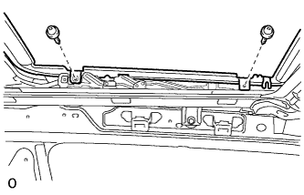
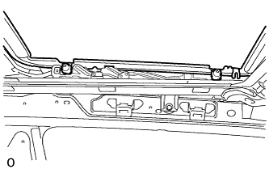

КОЖУХ ЛЮКА > УСТАНОВКА |
| 1. УСТАНОВИТЕ КОЖУХ ЛЮКА В СБОРЕ |
Временно установите кожух и закрепите его 4 болтами (со стороны кузова автомобиля) и 8 гайками.
Затяните 8 гаек.
Затяните 4 болта.
Подсоедините 4 сливных шланга люка.
| 2. УСТАНОВИТЕ УПЛОТНИТЕЛЬ ЛЮКА |
Установите уплотнитель люка, как рассмотрено ниже.
Присоедините каждый угол уплотнителя таим образом, чтобы все метки уплотнителя были совмещены с центровочными метами стекла люка. После присоединения всего уплотнителя убедитесь, что все метки уплотнителя находятся в пределах концевых меток стекла люка.
Убедитесь, что вырез уплотнителя направлен к задней стороне автомобиля и отцентрирован.
Убедитесь, что уплотнитель надежно закреплен, как показано на рисунке.
| *a | Вырез | *b | Задняя сторона |
| *c | ПРАВИЛЬНО | *d | НЕПРАВИЛЬНО |
| 3. УСТАНОВИТЕ СТЕКЛО ЛЮКА В СБОРЕ |
|  |
Временно закрепите стекло люка, завернув 4 винта с помощью торцевого ключа "torx" T25.
Выполните проверку уровня.
Проверьте разность уровней панели люка и верхней поверхности уплотнителя "а" при полностью закрытом стекле люка.
| Участок | Заданные условия |
| A - A | 0 + 1,0 мм (0 +0,0394 дюйма) 0 - 2,0 мм (0 - 0,0787 дюйма) |
| B - B | 0 + 2,0 мм (0 + 0,0787 дюйма) 0 - 1,0 мм (0 - 0,0394 дюйма) |
| C-C | 0 + 1,5 мм (0 + 0,0591 дюйма) 0 - 1,5 мм (0 - 0,0591 дюйма) |
| D-D | 0 + 1,5 мм (0 + 0,0591 дюйма) 0 - 1,0 мм (0 - 0,0394 дюйма) |
Выполните проверку зазоров.
Проверьте зазор между панелью крыши и стеклом люка.
| *a | Равномерно | - | - |
|  |
Затяните 4 винта.
| 4. ПРОВЕРЬТЕ, НЕТ ЛИ ПРОТЕЧЕК ВОДЫ |
После регулировки стекла люка проверьте, нет ли протечек воды.
Если есть протечки, отрегулируйте люк заново.
| 5. УСТАНОВИТЕ ЛЕВУЮ БОКОВУЮ ОБЛИЦОВКУ ЛЮКА |
 |
Установите боковую облицовку люка и закрепите ее 5 захватами.
| 6. УСТАНОВИТЕ ПРАВУЮ БОКОВУЮ ОБЛИЦОВКУ ЛЮКА |
| 7. УСТАНОВИТЕ ЗАДНИЙ ВОЗДУХОВОД КРЫШИ № 3 (для моделей с двойной системой кондиционирования) |
Установите воздуховод и закрепите его фиксатором.
| 8. УСТАНОВИТЕ ЗАДНИЙ ВОЗДУХОВОД КРЫШИ № 5 (для моделей с двойной системой кондиционирования) |
Установите воздуховод и закрепите его фиксатором.
| 9. УСТАНОВИТЕ ЛЕВУЮ ПОДУШКУ БЕЗОПАСНОСТИ ЗАНАВЕСОЧНОГО ТИПА В СБОРЕ |
Установите левую подушку безопасности занавесочного типа в сборе (Нажмите здесь).
| 10. УСТАНОВИТЕ ПРАВУЮ ПОДУШКУ БЕЗОПАСНОСТИ ЗАНАВЕСОЧНОГО ТИПА В СБОРЕ |
| 11. УСТАНОВИТЕ ОБИВКУ КРЫШИ В СБОРЕ (для 3-х дверных моделей) |
Установите обивку крыши в сборе (Нажмите здесь).
| 12. УСТАНОВИТЕ ОБИВКУ КРЫШИ В СБОРЕ (для 5-х дверных моделей) |
Установите обивку крыши в сборе (Нажмите здесь).
| 13. ПОДСОЕДИНИТЕ ПРОВОД К ОТРИЦАТЕЛЬНОМУ ВЫВОДУ АККУМУЛЯТОРНОЙ БАТАРЕИ |
| 14. ПРОВЕРЬТЕ КОНТРОЛЬНУЮ ЛАМПУ АВАРИЙНОГО СОСТОЯНИЯ SRS |
Проверьте контрольную лампу аварийного состояния SRS (Нажмите здесь).